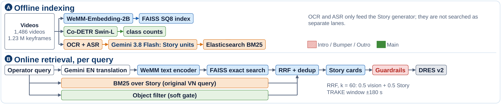
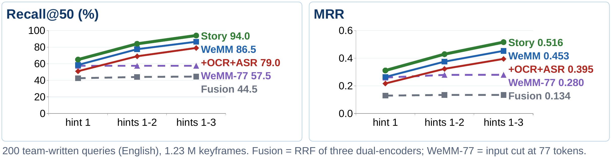

1 High School for the Gifted, Vietnam National University Ho Chi Minh City, Vietnam 2 Software Engineering Laboratory, Faculty of Information Technology, University of Science, Vietnam National University Ho Chi Minh City, Vietnam
Story units replace query trimming, modality switching and bumper memory in interactive known-item search.
79.0% → 94.0%
Recall@50 when raw OCR and ASR lanes are replaced by the Story lane (hints 1 to 3, 200 queries).
2.4× MRR
Untrimmed hints on one long-context index vs. a three-encoder fusion fed a hand-compressed query.
100 / 100
Hand-marked bumpers recovered with start and end errors summing to at most 3 s (88 within 1 s).
Abstract
Interactive video event retrieval under time pressure burdens the operator as well as the engine: queries must be trimmed to fit the encoder, modalities switched on and off, and non-target segments remembered. We present 1STAR, automating these frictions by default while preserving operator control, in two ways. First, a narrative Story modality: Gemini 3.8 Flash structures Optical Character Recognition (OCR) and Automatic Speech Recognition (ASR) into Intro, Main, Bumper and Outro units, replacing noisy separate text lanes. Added to the visual index (WeMM-Embedding-2B), raw OCR and ASR lanes dilute ranking and lower Recall@50 (R@50) from 86.5% to 79.0%; the synthesized Story lane raises it to 94.0%. The same units drive Story-level deduplication and submission guardrails; on 100 hand-marked bumpers, start and end errors sum to at most 3 s (88 within 1 s). Second, this long-context embedding index accepts untrimmed hints in place of a rank fusion of three dual-encoders. On 200 team-written known-item queries (English translations) over 1.23M keyframes, untrimmed hints give Mean Reciprocal Rank (MRR) of 0.45 (R@50 86.5%), 2.4 times the 0.19 (58.0%) of the fusion fed a query an operator compressed by hand to fit its text towers. Truncating WeMM's input at 77 tokens removes the gain from added hints. In the Ho Chi Minh City AI Challenge 2026 finals, 1STAR received an Excellent overall performance rating from the organizers, securing Outstanding in Visual Known-Item Search alongside Excellent ratings in Textual Known-Item Search, Question Answering, and Temporal Retrieval and Alignment of Key Events.
Paper
Accepted manuscript (PDF)
14 pages plus a one-page publisher notice, before copy-editing and typesetting.
This version of the contribution has been accepted for publication, after peer review (when applicable) but is not the Version of Record and does not reflect post-acceptance improvements, or any corrections. The Version of Record will be available online at http://dx.doi.org/[DOI to be added after publication]. Use of this Accepted Version is subject to the publisher's Accepted Manuscript terms of use.
Three frictions slow the operator and cost points
Queries outgrow the encoder
Known-item hints keep arriving, but the text towers of dual-encoders read at most 77 tokens, so operators compress hints by hand.
Modalities are a manual choice
Operators decide which lane to search, and raw OCR and ASR text dilutes the ranking.
Non-target zones cost points
Intros, bumpers and credits look like targets. Each wrong submission costs 10 points under DRES.
Story structuring: one structure, three jobs
Real bulletin L21_V001 (335 shots). Gemini 3.8 Flash splits it into 23 units. A fixed head/tail 10% rule misses both bumpers; over 60 bulletins it misses all 93 teaser bumpers and flags 16.5% of valid Main Content.
Cleaner text lane. Entity-dense Story text replaces OCR and ASR tickers.
Story-level deduplication. 23 cards instead of 335 near-duplicate frames.
Submission guardrails. A "!" badge and a confirmation modal on every non-Main frame.
1STAR: two lanes, one result list, guardrails first

A: offline indexing. OCR and ASR only feed the Story generator; they are not searched as separate lanes. B: online retrieval. The visual lane gets the English translation, BM25 searches Story with the original query, and the two rankings are fused by RRF (k = 60, 0.5 vision + 0.5 Story).
Story lifts R@50 from 79% to 94%; long context gives 2.4× MRR

200 team-written known-item queries (English translations) over 1,486 videos and 1.23 M keyframes. Hints are released progressively; the charts show hint 1, hints 1 to 2 and hints 1 to 3.
Long context beats fusion. MRR 0.45 vs. 0.13 for the three-encoder fusion at hints 1 to 3, and 0.19 when the fusion is fed a hand-compressed query (2.4×). Cutting WeMM at 77 tokens removes the gain from added hints.
Story beats raw OCR+ASR. 26 to 30 more of 200 queries in the top 50 than naive text fusion, and 13 to 15 more than visual search alone.
In the finals: Excellent overall, Outstanding in Visual KIS
trake-04: query panel (A) and the top result; the Story query ranks the target L26_V402 first.qa-09: the bumper replays the story's aerial shot (7:50.8 vs. 8:24.0); DRES accepts only 8:22 to 9:00, and the guardrail steers the submission to Main Content.
Ratings are the organizers' evaluation as reported in the paper. This page does not reproduce cross-team leaderboards.
AI Challenge HCMC 2026 poster. Shown at the award day, before the paper was written. It focuses on the pipeline; where its figures differ from the paper (for example R@50), the paper is authoritative.Download the PDF
Team and roles
Role
AI Engineer
Dinh-Nguyen Tu (lead)
Truong-Kha Khuu
Hai-Dang Nguyen (advisor)
Role
Data Engineer
Minh-Trung Le
Dinh-Nguyen Nguyen
Role
Frontend Developer
Phuc-Thai Tran
Cong-Diem-Hang Nguyen
Roles as credited on the AI Challenge HCMC 2026 poster. The students are from the High School for the Gifted, VNU-HCM; the advisor is from the Software Engineering Laboratory, University of Science, VNU-HCM.
Cite
The accepted manuscript is above; the Version of Record will be linked here once the SOICT 2026 proceedings (Springer CCIS) are published.
@inproceedings{tu2026_1star,
title = {{1STAR}: Narrative Story Structuring for Operator-Centric
Interactive Video Event Retrieval System},
author = {Tu, Dinh-Nguyen and Le, Minh-Trung and Khuu, Truong-Kha and
Nguyen, Dinh-Nguyen and Tran, Phuc-Thai and
Nguyen, Cong-Diem-Hang and Nguyen, Hai-Dang},
booktitle = {Proceedings of the 15th International Symposium on
Information and Communication Technology ({SOICT} 2026)},
publisher = {Springer Nature},
year = {2026},
note = {DOI to be added after publication}
}
Contact
Questions about the paper or the poster: please open an issue or contact the corresponding author listed in the paper.